El presidente del Gobierno y del PP , José María Aznar , dijo que el " único riesgo " para la prosperidad de España son " las políticas de retroceso " del PSOE , ya que esta formación no puede hacer " ni un partido , ni un proyecto , ni una idea " porque es " sólo un barullo imposible e indeseable " para el futuro.
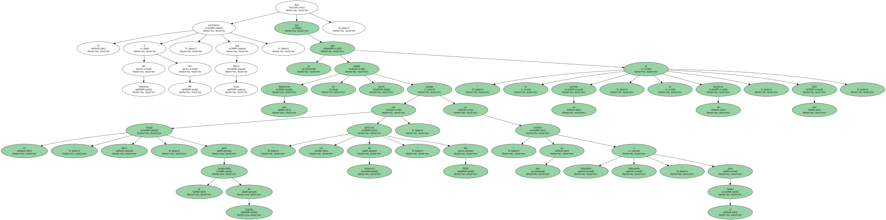" Y como eso se sabe , intentarán ensuciar con todo tipo de cosas la campaña , porque han sido una oposición mala e incapaz de plantear una alternativa constructiva a la sociedad española " , explicó Aznar , ante unas mil personas en un mitin del PP en Melilla.
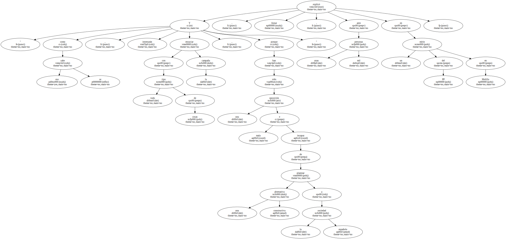El presidente del Gobierno mostró su confianza en conseguir , durante la próxima legislatura , otros 1,8 millones de empleos , además de sacar adelante otros proyectos como la aprobación de la Ley de Humanidades o la modificación de la Ley de Extranjería , cuyo paso por las Cortes ha demostrado , según dijo , que " algunos prefieren perjudicar a su país " por " el placer " de que el Gobierno " no tenga una victoria parlamentaria ".
Esta ley , añadió , " es negativa para los intereses de nuestro país y la modificaremos con la mayoría " para tener " normas con sentido común " pese a " algunos que se prestaron a maniobras políticas oportunistas al corto plazo en contra de los intereses de España ".
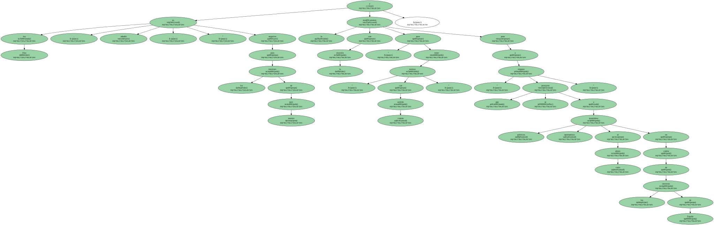Aznar aprovechó su intervención para poner como ejemplo " de lo que hay que evitar " la reunión del candidato del PSOE , Joaquín Almunia , con el líder del PSC , Pascual Maragall , para decirle " que los socialistas catalanes iban a sumar fuerzas con los socialistas españoles " para las elecciones.
" Pero , ¿ eso qué es ? " , preguntó Aznar , antes de asegurar que el PSOE es un " barullo imposible " para España que el PP " intentará evitar " con un " proyecto común , compartido en todas las partes y en el que todos los españoles arrimen el hombro ".
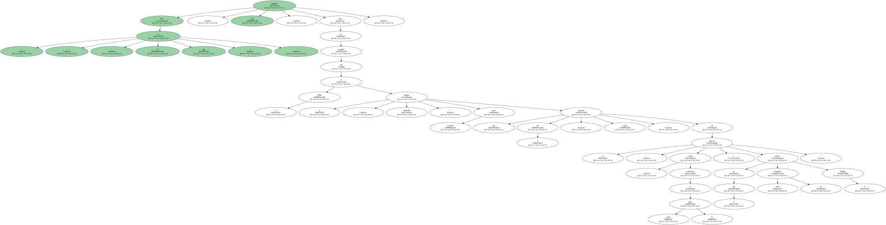Además , el jefe del Ejecutivo indicó que " dentro de poco " convocará las elecciones y , con ello , demostrará a quienes aseguraron que no terminaría la legislatura " con 156 diputados y las cosas que se decían " que supondrá la más larga de la historia de la democracia española " y la mejor ".
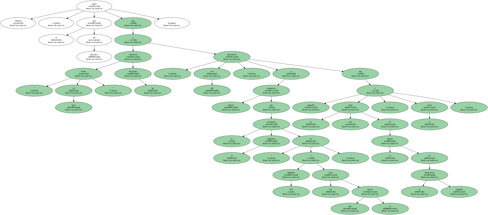En este sentido , advirtió de que quiere " más ambiciones " para España a través de objetivos concretos y que no le interesa si va a haber una campaña electoral " sucia " , porque sólo será así " por aquellos que sólo saben hacer política sucia ".
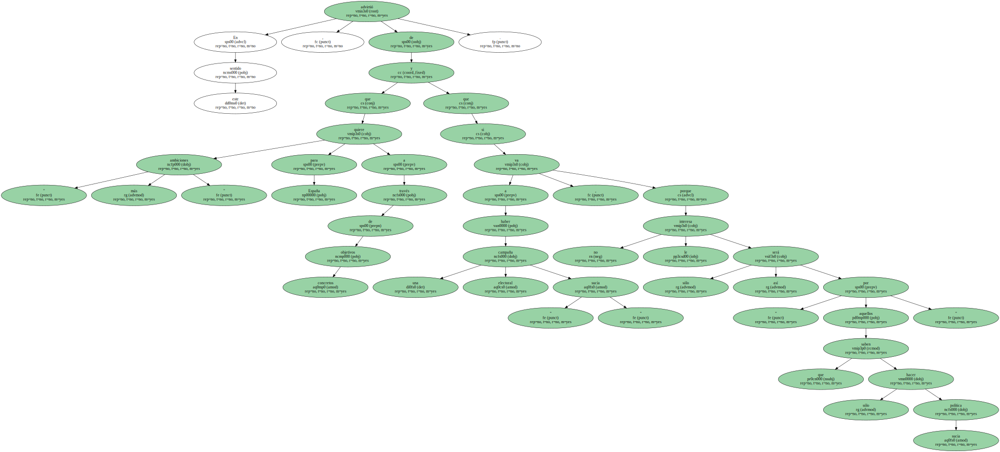Aznar recomendó a los votantes que escojan entre los proyectos que " son capaces de respetar la tolerancia , convivir y buscar el futuro " y los que , por contra , " no tienen coraje para defenderlo , quieren practicar políticas de exclusión ".
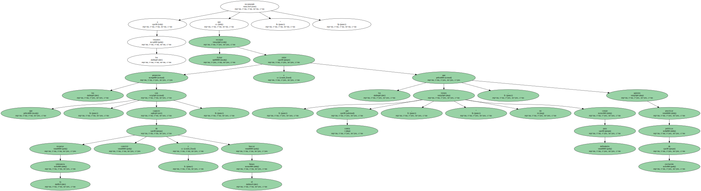Aznar recomendó a los votantes que escojan entre los proyectos que " son capaces de respetar la tolerancia , convivir y buscar el futuro " y los que , por contra , " no tienen coraje para defenderlo , quieren practicar políticas de exclusión ".
Aznar recomendó a los votantes que escojan entre los proyectos que " son capaces de respetar la tolerancia , convivir y buscar el futuro " y los que , por contra , " no tienen coraje para defenderlo , quieren practicar políticas de exclusión ".
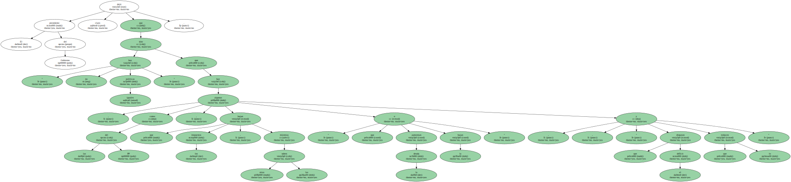Aznar recomendó a los votantes que escojan entre los proyectos que " son capaces de respetar la tolerancia , convivir y buscar el futuro " y los que , por contra , " no tienen coraje para defenderlo , quieren practicar políticas de exclusión ".
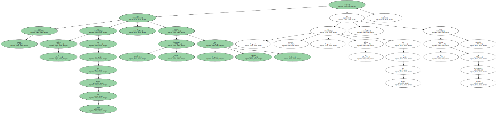Aznar recomendó a los votantes que escojan entre los proyectos que " son capaces de respetar la tolerancia , convivir y buscar el futuro " y los que , por contra , " no tienen coraje para defenderlo , quieren practicar políticas de exclusión ".
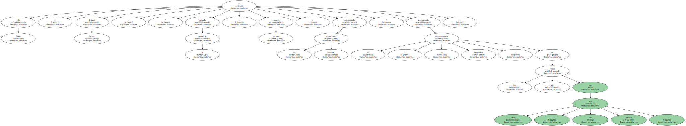Aznar recomendó a los votantes que escojan entre los proyectos que " son capaces de respetar la tolerancia , convivir y buscar el futuro " y los que , por contra , " no tienen coraje para defenderlo , quieren practicar políticas de exclusión ".
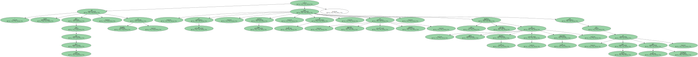Aznar recomendó a los votantes que escojan entre los proyectos que " son capaces de respetar la tolerancia , convivir y buscar el futuro " y los que , por contra , " no tienen coraje para defenderlo , quieren practicar políticas de exclusión ".

Aznar recomendó a los votantes que escojan entre los proyectos que " son capaces de respetar la tolerancia , convivir y buscar el futuro " y los que , por contra , " no tienen coraje para defenderlo , quieren practicar políticas de exclusión ".

Aznar recomendó a los votantes que escojan entre los proyectos que " son capaces de respetar la tolerancia , convivir y buscar el futuro " y los que , por contra , " no tienen coraje para defenderlo , quieren practicar políticas de exclusión ".
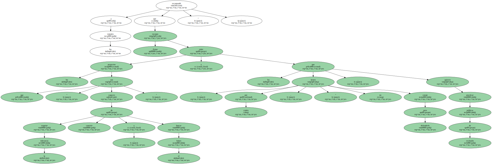Aznar recomendó a los votantes que escojan entre los proyectos que " son capaces de respetar la tolerancia , convivir y buscar el futuro " y los que , por contra , " no tienen coraje para defenderlo , quieren practicar políticas de exclusión ".
" Habrá que elegir entre el proyecto que ha creado en España 1,8 millones de puestos de trabajo en cuatro años y ha reducido la tasa de paro a la más baja en los últimos veinte años " , y otros que " sólo son capaces de generar paro o retroceso " , dijo Aznar.
El presidente del Gobierno dejó claro que " no hay políticas iguales " sino que hay algunas , como las del PP , que bajan los impuestos , mientras otras las suben , " que aumentan la deuda o la bajan " , " que disparan el déficit y que lo reducen ".
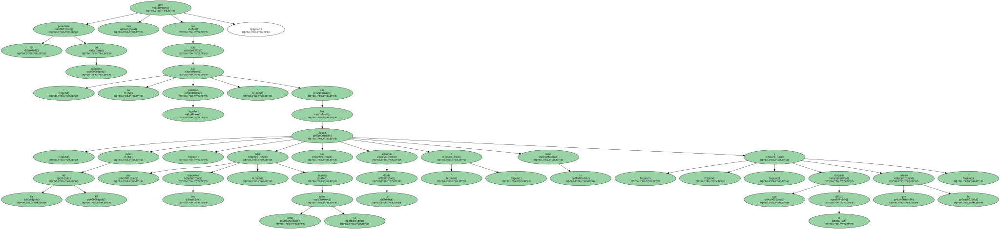Hace cuatro años el déficit era del 7 por ciento del PIB y la Seguridad Social estaba " en quiebra " y hoy , recordó , el déficit es del 1 por ciento y el sistema de prestaciones sociales tiene superávit.
Todo ello , destacó Aznar , " bajando los impuestos , creando empleo y aumentando las prestaciones sociales " y demostrando así " la incompetencia clamorosa " de los que creían que esto " no era posible ".
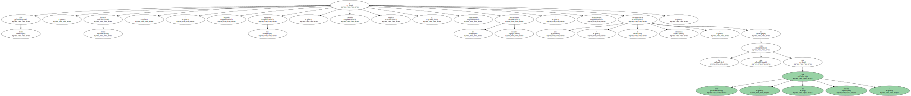" España está mejor que hace cuatro años , es innegable " y , por eso , concluyó Aznar , el PP ofrece , " con seguridad y progreso " , una próxima legislatura " del empleo , la educación y la innovación " para que " nuestro país dé un salto fundamental ".
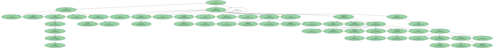